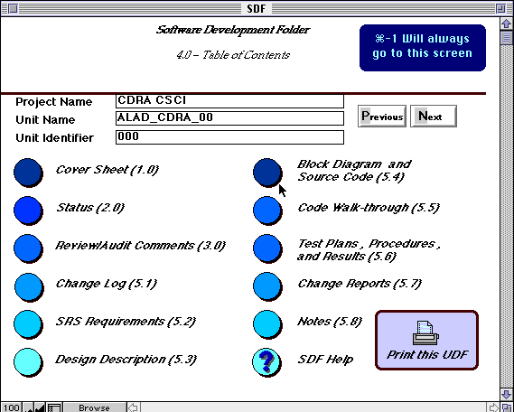
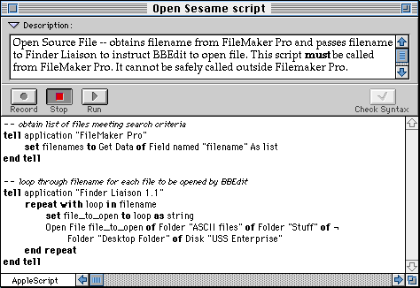
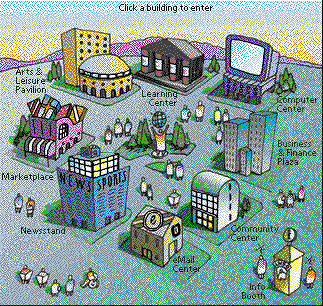

Fourth Quarter, 1994
·· NOTICE - PLEASE READ ··
This newsletter is divided into chapters, with each chapter divided into sections. To scroll up or down sections, use the scroll bar to the right or use the up/down arrow keys. To move between chapters, use the scroll bar at the bottom, the left/right arrow keys, the Contents menu above, or click on the hand at the bottom of each chapter. If you have a small screen, click on the zoom box on the upper right. Clicking on the close box on the upper left will quit this program.
Welcome to the second electronic version of the ASACMUG newsletter. This issue features an article on using FileMaker Pro with Applescript, reviews of LeeMail (a mailing utility) and VirtualDisk (a disk cataloging utility), plus a detailed look at System 7.5. We also have the President's Column and Mac-related news articles, including an offer to join the eWorld online service.
Enjoy and have fun! Remember, we are always looking for ways to make this newsletter one you want to read. Feedback and comments are greatly appreciated. [See last page for contact information.]
Alex Morando
Newsletter Editor
Table of Contents
- President's Column
- Scripting FileMaker Pro
- LeeMail
- VirtualDisk
- System 7.5 Overview
- Macintosh News
- November User Group Specials
President's Column
Mike Quan
quanmike@aol.com
[No president's column this month, sorry. -Ed.]
Scripting FileMaker Pro
Alex Morando, AES Engineering
18 months ago, Claris released a version of their FileMaker Pro database with scripting capabilities. It is a subset of AppleScript, an system extension that allows multiple applications to work together and allow the user to integrate them for his or her specific needs. In many respects, it is a batch language similar to that used on PCs, but is also an entire programming language with a great deal of power.
Software Development Folders
AppleScript was used in AES Space Systems Engineering to create a prototype Software Development Folder (SDF). It offered features and capabilities not possible with the current paper-based SDF.
An SDF tracks the development of a software engineering program. It tracks requirements, project milestones, actual program files, diagrams, and test/qualification results. It is used to verify that the software is developed correctly and within customer specifications.
Before this project, an SDF was just a manila folder with separate sections, each section being handwritten or printed separately. The basic problem is that the relationship between what is in the SDF and what software is actually being written is out-of-date at best, uncertain at worst.
In designing the prototype, FileMaker Pro was selected to contain the various sections in the SDF. A database application made sense since each SDF section contained redundant information, such as SDF name, dates, assigned serial number, and schedule milestones. Different layouts were used to recreate each page so that it looked like the original paper-only SDF. Fields were added to reference the various documents, customer changes, technical milestones, comments, and other required SDF information. One layout was used to create a central reference to the SDF, similar to a Table of Contents.
Enter AppleScript
This is where AppleScript comes into play. Ada source code (text files) and data flow diagrams (Postscript files) had to be correlated. These files could have been imported into FileMaker Pro as text and picture fields, but that would have dramatically increased database size and would result in having multiple copies of the source code and diagrams. Thus, it was decided to keep the source code as separate text files and the diagrams in a separate FileMaker database. So how can a person looking at the original SDF be able to access the source code text and diagrams (in another file)?
The diagrams was easy - use a script. It would take the unit identifier for the software, copy it, open the diagram database, and do a search based on that unit identifier. The diagram would then pop up soon after the user clicks on the "Block Diagram" button (Figure 1). The corresponding script is shown in Figure 2:

Figure 1 - SDF Interface
Script 1 -- located in SDF database
Go to Field ["Unit Identifier"]
Copy [Select]
Perform Script [Sub-scripts,External,:"EPSF Graphics",Script 2]
End
Script 2 -- located in EPSF Graphics database
Find All
Enter Find Mode [Restore]
Go to Field ["Unit Identifier"]
Paste [Select]
Perform Find[]
End
Figure 2 - FileMaker Pro Script Examples
To open source code files was similar: take the current serial number for the software, and instruct the Finder to open a file based on the serial number. The AppleScript that does this is listed in Figure 3. It's very easy to understand, since AppleScript is a loosely-typed language - there are multiple ways to accomplish the same thing and the syntax is English-like.
Instead of telling what program to open, the Finder simply tells the file to open itself. Thus, it doesn't matter what program created the file; the right one will always be opened. However, since this was implemented on both Macs and PCs, the default file extension is *.ASC to allow automatic opening by Windows programs.

Figure 3 - AppleScript Example
The Bottom Line
This FileMaker database prototype took four days to conceptualize, implement, and debug. Both the Mac and Windows version of the SDF were implemented simultaneously. It is very robust and was well received by those in charge of SDF maintenance. In addition, with the security features built into FileMaker, there is now a closer relationship between what we say and what we do, in the spirit of IPDS
LeeMail
Ron Keating, AES Engineering
Introduction to Email on the Internet
Everybody wants to use the Internet these days and the one thing that everybody can do on the Internet is send email. Electronic Mail is the first of 4 rivers of information on the Internet (see page 18 of Adam Engst's book Internet Starter Kit for the other three). For some people, the amount of time the Net requires sours their experience with it. The one thing that keeps most users checking the Net is electronic mail.
There are a number of ways to access the Internet, including Email Gateways (like Compuserve and America On Line provide), Command Line Access (from a Unix machine), UUCP access, and as Adam Engst calls it "the cream of the crop" MacTCP access. It is possible to use the command-line access from your favorite Unix workstation, using the "mail" command. But, if you don't like typing long strings of commands or remembering cryptic Unix abbreviations, there is MacTCP access with the Macintosh graphical interface.
If you have MacTCP correctly installed and are connected via a network or dial up phone line with a modem to an Internet provider, you can use one of the cool MacTCP Email programs like Eudora, LeeMail, Iride, POPmail, TechMail, BlitzMail and probably countless others.
Many Macs at the company already have direct access to the Internet. If you can access a networked Unix workstation via MacTCP, your Mac is probably a node on the Internet. For example, my Internet address is keating@mac7.tor.allied.com. The Macintosh sitting on my office desktop is mac7. A good way to prove this is to try out an Email program, like LeeMail. One of the good things about an Email program is it doesn't appear to be affected by the introduction of the company's Interlock Firewall, that was activated on June 27.
To use a dial up connection with a modem, in addition to MacTCP, you also have to have a SLIP (Serial Line Internet Protocol) or the newer PPP (Point to Point Protocol) account with an Internet provider if you want to run MacTCP aware applications with a Macintosh interface.
It seems that the favorite TCP/IP aware Email software is Eudora, written by Steve Dorner. However, Eudora doesn't work on the company network, because it requires POP (Post Office Protocol) mail server. All we have is SMTP (Simple Mail Transfer Protocol) on our network. Enter LeeMail, which is an SMTP mailer.
I have been using LeeMail for three months now, and it is another one of those programs that does one thing and does it very well. It uses only 256k of RAM and can be left running all of the time. I put it in my startup folder. LeeMail has audio notification of new mail; when mail arrives, it has it's own sound resource that is like a spoon striking a half full wine glass twice. I liked the sound so much, I used ResEdit to create a separate sound from it, which I added to my system file.
How to Get LeeMail
LeeMail is a shareware program; if you like it, send a check for $25.00 to Lee Fyock, who wrote the program. The program can be found on the ASACMUG BBS on the Engineering KeyServer in the Software Library:Network folder. LeeMail comes with 17 pages of documentation written in Microsoft Word.
How to Use LeeMail
In the beginning, to use LeeMail, you have to go to the Edit menu and select Settings, which opens the Preferences window. Select the Mail Setup radio button and enter the following information. I will give the entries for my setup as examples.
- Your Mac's domain name mac7.tor.allied.com
- Your user ID keating
- Your full name Ron Keating
- Your address for replies keating@mac7.tor.allied.com
Your user ID can be just about any alphanumeric string, and your full name is your "human" name, so that recipients will know who sent them mail. Next, select Outgoing Mail Options in Preferences. My entries are as follows:
- X Use mail router
- Router domain name ase.tor.allied.com
- X Binhex TEXT enclosures
- Limit TCP packet size
- X CC to self
- Use [80] columns in window
- X Add signature
The signature button in Outgoing Mail Options lets you set the text to be appended to your outgoing mail. For example, I use sometimes use the following signature, although I often change it:
******************************************************************************* Ron Keating | People who think they know everything keating@mac7.tor.allied.com | make life difficult (310) 512-3575 | for those of us AlliedSignal ECS,AES,ASA | who really do. *******************************************************************************
There are still more windows in Preferences for Incoming Mail Options, General Options, Notify Options, and POP options; these should be self explanatory.
One other setting is very important if you want to send mail: the Domain Name Server information in the MacTCP Administrator dialog box must be correctly entered. To check if this information has been entered, open the MacTCP control panel and click on More to see the Administrator dialog box. To set the information in the Administrator dialog box, you need "full configuration authority." You can get this authority if you have AdminTCP in your Control Panels in the System Folder. Open the Admin TCP control panel, select more, and remove the X in the Protected box. Then set the Domain Name Server information. My setting is as follows:
- Domain IP Address
- tor.allied.com 131.127.119.10
If you don't have Admin TCP, or you don't know your Domain Name Server, you will have to see your network system administrator. It's a good idea to make a copy of the MacTCP files, before making any changes. There are four files that are important: MacTCP Prep in the Preferences folder, MacTCP and AdminTCP in the Control Panels folder, and MacTCP DNR in the System Folder. You can copy the hosts file in the System Folder too. All of the settings are saved in the MacTCP Prep file, so this is the most important one to save.
LeeMail has a lot of nice features. LeeMail supports aliases; selecting Aliases from the Edit menu gives the Aliases window. This lets you associate a simple name with the long string of text that comprises each Internet address, so that you don't have to type the address every time you send mail. When you are done with LeeMail, it automatically hides its windows when you click on any other part of the desktop. LeeMail can be set up to save all of your incoming messages and all of your outgoing messages to files that are easily accessed from the program. It also supports auto-quote text when replying to messages.
If LeeMail isn't running, when Email arrives, the local SMTP server saves the Email file. Then, when you launch LeeMail or boot up your Mac, the server sends the Email file to LeeMail, which then stores it on the Mac's hard drive in the LeeMail Files folder.
In addition to sending text messages, LeeMail can be used to send and receive binary files. Binary files can be sent as enclosures or simply copied into the text message. LeeMail enclosures are sent in BinHex format, which is a 7 bit ASCII representation of an 8 bit binary file and is widely used on the Internet by the Mac world. You can BinHex a file with AutoBinHex and you can deBinHex a file with StuffIt Expander, both of which are freeware and available on the Engineering KeyServer in Torrance. You can use BBEdit to open a BinHex file and paste it into email text. You can extract a BinHexed file from email text, by recognizing that it starts with a blank line, followed by a message "(This file must be converted with BinHex 4.0)" and another blank line. The ASCII text between the two colons is the BinHexed file. Copy this and paste it into a new BBEdit file. To convert to the original binary file, use StuffIt Expander to extract the original from the saved BBEdit file. Sometimes, a long file greater than 20k may be broken up into parts at the receiving end. In this case, to restore the original file, copy each of the parts into BBEdit in turn to reassemble the original BinHexed file.
VIRTUALDISK by Continuum
Software
Roger Wright, AES Engineering
What Is It?
VirtualDisk is a small Control Panel system extension to help you produce and update an on-line catalog of all your floppy disks and other removable media that you use with your Macintosh.
The Problem:
After a few years of using a Macintosh -- both at work and at home -- I've accumulated well over a hundred floppy disks, which I have used for a variety of purposes. Some of these disks contain backup material of many types; some contain files of shareware, freeware, bulletin board discussions, etc.; and some of them have been used to transport data between my work and home computers. The problem: how do I find a particular item that I know I put on a floppy x weeks ago, but now can't remember which one?
[At this point, I should mention that I'm not talking about backup disks for various applications, such as Microsoft Word, MacDraw Pro, etc. These are neatly labeled and placed in special file boxes, where they are easily retrieved. I'm not interested in the contents of these disks, just what they are (e.g., Install 1).]
Up to now, I've found no satisfactory means of cataloging my many floppies. At one point, I started a project to produce tables of contents of all my floppies. This involved inserting each disk into the Mac, choosing View by Name and opening all folders on the disk, and then getting a printout using the Finder's Print Window... command. The idea was to have a loose-leaf binder to contain all these tables of contents. I managed to do only 5 to 6 disks before the tedium of the process killed it.
Besides, I realized that to search for a particular item would still require a bit of effort on my part, even if I had carefully categorized the table of contents in the notebook. And suppose I was at work and the notebook was at home.
The Solution: Virtual Disk
VirtualDisk is a utility by Continuum Software of Portland, Oregon which does a super job of producing, and keeping on-line, the contents of all removable media which pass through your Macintosh. It does this in a completely painless, and nearly automatic manner. (For purposes of discussion, we'll use the term floppy, but the operation is the same for all removable media; Syquest or Bernoulli cartridges, etc.).
How the Cataloging Works
When you first load VirtualDisk, it creates a 1 MB file called VirtualDisk Catalog in the Preferences File in your System Folder. This file is large enough to catalog about 8000 files; it will expand automatically as more and more floppies (or other removable media) are included.
The way VirtualDisk works is very simple: When you eject a floppy, VirtualDisk will save the disk's directory in its Catalog. In practice, I've found you want to set the "Ask First" preference as opposed to the "Always Catalog". When you eject a floppy that has not been previously cataloged, VirtualDisk, under "Ask First", will present you with a dialog asking if you want to catalog this disk. There are many times you don't want that particular disk cataloged; simply click on "Don't Catalog", or press the esc key, and the disk ejects. If you want to catalog it, click on "Catalog" or press the Return key, and VirtualDisk will assign it a serial number, and in a few seconds will store the disk's directory.
If the disk you are ejecting has already been cataloged, VirtualDisk will automatically scan its directory for any changes, and will appropriately update its Catalog file, and then eject the disk.
How to Interrogate the VirtualDisk Catalog
VirtualDisk automatically mounts a "volume" on your desktop -- its icon suggests a 22nd century power plant. When you double click on this icon, a window opens which contains the icons and names of all of the floppies which have been cataloged. This window can be viewed just like any other Finder window -- usually you'll want to View by Name. By double clicking a floppy icon, a new window will come up showing the contents of the floppy in the same style as if you had inserted the floppy and double clicked on it. (If you have turned on all of the VirtualDisk storage options, the window will be exactly the same as that of the floppy.)
You can wander through the various floppy directories as you choose, using the normal Finder procedures. More important, however, is the ability of any Find utility (the Finder's own Find..., Norton Utilities Fast Find, etc.) to quickly scan the floppy directories and present you with its search list. Using it in this manner, you can quickly find out where you have stored copies of a special file or utility, and their creation dates, version numbers, etc. For example, I recently found several copies of PopChar on various disks, all of which were older than the latest version on the bulletin boards.
If you double click on a particular file or application in one of the VirtualDisk windows, it will prompt you to insert the appropriate floppy.
Miscellaneous Information
Cataloging Non-Removable Media
The manual says that you can force VirtualDisk to catalog any SCSI volume or Network volume by holding down the Option key while dragging the volume to the trash.
Reducing Storage Used by the VirtualDisk Catalog
There are a number of options which can be selected which will reduce the size of the VirtualDisk Catalog -- or allow more items to be cataloged in the original 1-MB catalog. These include storing only black-and-white icons instead of color ones, and limiting the types of files to be cataloged. There are certain exclusions to the catalog process which can be set up explicitly: for example, never to catalog a name like "TeachText".
Use on Two Macintoshes
The license agreement specifically limits the use of the product to one Macintosh. This means if you have a home computer and one at work, or a base Mac and a PowerBook, you cannot use VirtualDisk on both computers. The best tactic here would be to install it on the computer at the location where you keep most of your removable media. To keep the VirtualDisk Catalog up to date, you would transport updated floppies to the machine upon which VirtualDisk is loaded, and do the cataloging there.
Other Utilities Included: DiskDup+ and EasyLabels
Two other products are shipped with VirtualDisk. One product, DiskDup+ makes sector-by-sector copies of disks. Like Apple's Disk Copy 4.2, it can also be used to store disk images on a hard drive.
Easy Labels is a disk labeling routine which can automatically produce a variety of diskette labels which include the disk name, its contents and the serial number which VirtualDisk has assigned to it. If you use the Avery 5274 diskette label, the disk title and serial number will appear on the edge of the disk.
Overall Opinion
I highly recommend VirtualDisk to all Mac users. It has worked smoothly, quickly, and without any errors in the month that I have had it. The program greatly simplifies my handling of floppies, and I'm sure it would be appropriate for persons who have Syquest or Bernoulli cartridges.
The Reference Manual is quite adequate, but it is published in a small 4.5 x 4.5 inch format. I like manuals to be larger so they are easier to put on a bookshelf, or include in a loose-leaf binder.
The restriction of use to only one Macintosh I feel is a real limitation and should be liberalized by Continuum Software.
Ordering Information
VirtualDisk is produced by
Continuum Software Inc.
1075 NW Murray Rd., Suite 307
Portland, OR 97229-5501
(800) 603-7446
The list price is $79.00, but Continuum will sell it direct for $49 plus $4.50 shipping and handling. For user groups (ASACMUG qualifies), Continuum offers the product for $39 plus S&H.
System 7.5
Alex Morando, AES Engineering
System 7.5 was released by Apple Computer last September. Althought the suggested retail price is $99, there are many ways to get it cheaper - buy a Mac after August, 1994, upgrade an existing copy of System 7, or take advantage of the User Group Special offer for $49.
I have been running 7.5 for the past three weeks on my PowerMac 6100. Overall, it has been more stable and faster than the previous version, but only if certain features are turned off. I found this disturbing since there are non-Apple utilities out there that can do the same job and yet keep your system stable and running at top speed.
System 7.5 can be purchsed in floppy or CD-ROM versions. I strongly recommend the CD-ROM version, as it contains more extra software (a cool QuickTime movie and demo software). It might be a good reason to go and buy a CD-ROM drive now, since prices have fallen below $200 for the older models. You can also make backup disks with either version; this is useful when trying to install on a Mac wihtout a CD-ROM drive.
There are three main installations of 7.5 - the basic software itself, QuickDraw GX, and PowerTalk. I have only installed the basic software and have no experience with either of the last two features except from what other people have told me. The memory requirements are as shown below. In reality, you probably need 8 megs of RAM for the basic system in order to run multiple applications, especially Microsoft Office.
| Basic System 7.5 | + QuickDraw GX | + PowerTalk | |
| 680X0 Mac | 4 Mb | 8 Mb | 8 Mb (12 Mb with QDGX) |
| Power Macintosh | 8 Mb | 16 Mb | 16 Mb |
One interesting feature of 7.5 is the new Memory Manager -- applications use less memory if virtual memory or RAMDoubler is installed. This is due to the use of shared libraries which reduce memory requirements since programs can now share common operating system code instead of duplicating them.
The following additions are part of System 7.5. The sections on QuickDraw GX and PowerTalk was obtained from other people who have more memory and who need to use the additional software.
MacTCP/OpenTransport
MacTCP allows Macs to communicate over a network using the TCP protocol. TCP is fast becoming the communications standard within corporate networks. Having MacTCP built-in is a smart move on Apple's part. It also will be PowerPC native.
PC Exchange 2.0
This control panel allows the Mac to mount DOS disks on the desktop, bypassing the cumbersome Apple File Exchange. Combined with Macintosh Easy Open, it opens DOS files by double-clicking on the file itself. No need to remember extensions or associate filenames as you would do on a PC.
Drag Manager
The new Drag Manager simplifies the way users transfer data between applications. Instead of cutting, switching to another application or document, and then pasting, users drag their selections from one window to another, even if it's in different applications. Selections can also be dragged to the Finder, where it will be stored as a 'clipping', ready to be dragged into any other window. The Notepad and Scrapbook that come with 7.5 shows how useful this feature can be.
QuickTime 2.0
Version 2.0 of QuickTime features faster frame rates (a Quadra 605 can now play VGA movies at 30 frames per second), support for MIDI and other notational formats, and support for high-end features used in video - MPEG and SMPTE.
Apple Guide
Balloon Help hasn't been successful among Mac developers. Apple hopes that Apple Guide will be better. Developers can write online documentation which lets help be given when appropriate. For example, if a user constantly chooses Copy from the Edit menu, Apple Guide will come up and suggest that cmd-C be used to save time. A more complicated task might be accompanied by cues and redlines (on the screen) to guide the user through the steps needed to accomplish his task. Audio help will be available on high-end Macs.
Mac Easy Open
Easy open uses XTND to translate files from one format to another. This lets users open another persons' file without having to have that person's application. For example, if a Photoshop user receives a PICT file created by Canvas, Easy Open will allow that file to be opened by Photoshop.
Scriptable Finder
The scriptable Finder is a long-delayed product which was supposed to have been shipped with AppleScript in 1993. This allows the Finder to be controlled by scripts to automate file management tasks like backup and organization.
QuickDraw GX
This is Apple's new way of handling graphics, both on-screen and off-screen. It brings capabilities previously found only in high-end graphics products to the operating system level. It supports gradients, enhanced masking, advanced transformation, and other improvements a graphics professional would love. The new printing architecture allows users to select printers and other output devices without the Chooser. Files are printed by dragging them to a printer icon on the desktop. Other features include moving print jobs from one printer to another by dragging icons, allocating large print jobs between different printers, restarting an interrupted job without going back to page 1, and many other features to simplify printing on the Mac. In addition, it is PowerPC native. For those who do not need GX, regular QuickDraw will still be supported and improved.
PowerTalk
PowerTalk is a communications extension that gives Macs built-in email and scheduling. Documents (or parts of documents) can be sent to other people or groups. A separate mail program or mail files are not necessary; everything can be done from a Mail command under the File menu. With Microsoft no longer developing Microsoft Mail, PowerTalk has been endorsed by both Apple and Microsoft as the next upgrade for Mail users.
The following shareware and freeware utilities have become standard features of System 7.5. Apple either bought out the utility or wrote their own enhancements.
| Utility | Purpose |
| Apple Menu Options | Hierarchical Apple menu |
| WindowShade | Roll up/down windows |
| FindPro | Enhanced Find command |
| Sticky Memos | Post-It notes on the desktop. |
| SuperClock | Clock on the menu bar |
| Launcher | Access frequently used programs and files |
When I first installed 7.5, I noticed that my Mac had slowed down noticeably. After a couple of hours of trial and error, I found out that the following features were hogging my memory and CPU power - Apple Menu Options and Launcher. Turning off these two made 7.5 as fast as my prevous system (7.0.1). I also found additional speed improvements when Apple Guide is turned off, since it has not been optimized for the Power Macintosh.
[If you miss the features of Apple Menu Options, third-party utilities such as PopupFolder and Now Utilities 5.0 can do the same thing with little or no slowdown.]
Unless you need the advanced graphics capability of QuickDraw GX or the communications features of PowerTalk, installing these features is not recommended. However, graphics and art departments will probably want to install QDGX while business users may want to use PowerTalk, if the network is compatible.
All in all, System 7.5 makes working with the Mac easier and to offer features to differentiate itself from PC compatibles. It is not a major step in terms of the internal workings of the Mac operating system. That supposedly will come with the release of System 8.0 sometime in 1995.
Macintosh News
[Press releases on the
world of Macintosh]
Apple Computer's eWorld Goes Online
Newsflash!
CUPERTINO, CALIFORNIA, U.S.A., 1994 JUN 20 (NB) -- Apple Computer Macintosh users in the United States are being invited by Apple Computer to join its new online service, eWorld, which begins service today with close to 12,000 members already online.
According to Apple, eWorld will be a fully global online service offering local access numbers and local content for specific international areas within six months. As part of its continuing cross-platform commitment, Apple will welcome DOS/Windows users to eWorld sometime in 1995. Apple claims that the eWorld sftware is already included in most Apple computers being shipped this summer.
Officially billed as "eWorld for Macintosh and NewtonMail, an eWorld messaging center for Newtons," Apple's eWorld opens to a village of buildings, each labeled with a name to identify its content and a mail delivery truck to indicate the presence of e-mail.

The village consists of a computer center, learning center, arts and leisure center, a marketplace, community center, newsstand, business & finance plaza, e-mail center and info booth. Primarily, created as a business to business service, eWorld also offers online instant communication and entertainment features. Point-and-click commands eliminate any need for the slash (/) commands used in earlier online services.
More than one hundred partners have joined Apple's eWorld to provide a host of news, information, service and communication. The Computer Center offers news, editorials, reviews and features from award-winning news wire services such as Newsbytes, as well as from MacWeek, MacUser, Ziff/Net Mac, Macworld and others. A 24-hour Apple Customer Center support area offers guidance, problem-solving, information and the latest resources to assist customers.
US Mac users may obtain the software directly through Apple at (800) 775-4556. The monthly fee is $8.95 per month and includes two free hours of evening or weekend usage. Each additional hour is billed at $4.95 with an hourly surcharge of $2.95 during the business hours of 6:00 a.m. to 6:00 p.m. local time. There are no additional charges for Internet mail or 9600 baud access.
APPLE PREPARES 486DX COPROCESSOR CARD FOR POWER MAC 6100 ONLY
(November 4th 1994) Details are still sketchy, but as we went to press Apple was preparing to announce that another of its technology demonstrations - the 486 board for the Power Macintosh - has turned into a real product.
We first reported on the board back in July (PowerPC News issue 9, story 1111) when Apple demonstrated a 50MHz 486DX2 co-processor which let the Macintosh run Intel-based programs more efficiently than Insignia's Softwindows. The demonstration was an evolution of the 'Houdini' card which had previously been produced as a limited-run product for the Quadra 610. It featured improved networking support and SoundBlaster-compatible sound output.
We understand that the finished product uses a 66MHz 486DX-2 but that it will be limited to the Power Macintosh 6100 only. From a marketing standpoint the decision looks curious, but an Apple source says that the limitation was forced on the company by the form-factor of the card and the fact that it needs to use the 6100's '040 slot . It still looks curious and means that the Power Mac 6100 will become the Macintosh of choice for those users who need to run Windows software fast and in protected mode. The upside is the price. Our guess is that it should appear in the US for something like $600 or $700. [Which makes a great upgrade option for Power Mac users who have to run DOS applications!]
[Subsequent information indicates that the card will also work on the 7100 and 8100 Power Macintosh models, but Apple will not provide it as a bundled option. You have to buy the card separately and install it yourself by removing the HPV video card already present in the 7100/8100.]
(C) PowerPC News - Free by mailing: add@power.globalnews.com
November User Group Connection Specials
(November 1st 1994) Every month, the User Group Connection (UGC) announces specials available to all user group members. It allows members to purchase new and reconditioned equipment at reduced prices, often below cost. To participate, contact your local user group for purchase program details and requirements. Orders filled on a first-come, first-serve basis. Prices include ground shipping; next-day FedEx available for an additional fee. CA residents add 8.25% sales tax. Refurbished items have 90-day warranty. New items have manufacturer's warranty.
User Group Purchase Program - November 1994
| Product | Description | Refurbished / New | Price |
|---|---|---|---|
| Performa 575 | 33 MHz 68LC040, 14" color display, 5 Meg RAM / 250 Meg HD, expansion slots | refurbished | $1399 |
| Performa 476 | 25 MHz 68LC040, 14" color display, 4 Meg RAM / 230 Meg HD | refurbished | $ 989 |
| Macintosh LC 520 | 25 MHz 68030, 14" color display, 4 Meg RAM / 80 Meg HD, 16-bit color | refurbished | $ 799 |
| 25 MHz 68030, 14" color display, 5 Meg RAM / 80 Meg HD, 16-bit color, CD-ROM | refurbished | $ 999 | |
| StyleWriter II | 300 dpi inkjet | refurbished | $ 189 |
| Personal LaserWriter 300 | 300 dpi laser printer, QuickDraw, 100 sheet paper tray, EnergyStar compliant | refurbished | $ 379 |
| JAG II | Graphics software for anti-aliasing and resolution enhancement. | new | $ 39.95 |

Click above to exit the newsletter
The ASACMUG newsletter is an independent publication not affiliated or otherwise associated with or sponsored or sanctioned by Apple Computer Inc or AlliedSignal, Inc. The opinions, statements, positions and views stated herein are those of the authors or publisher and are not intended to be the opinions, positions or views of Apple Computer Inc. or AlliedSignal, Inc.
© 1994 ASACMUG Apple®, Macintosh®, FDHD®, and Mac® are registered trademarks of Apple Computer.
Portions © MUG News Service.